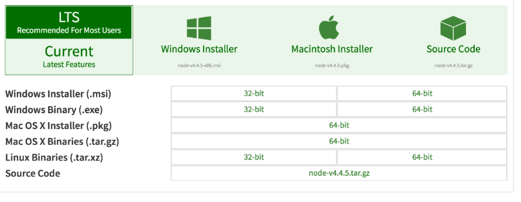

Instalações
Para instalar o Node.js, não é preciso montar a aplicação a partir do código fonte. No site oficial são oferecidos os instaladores.
Entre em: https://nodejs.org/en/download/

Windows
Baixe o "Windows Installer (.msi)", pois ele vem mais completo para desenvolvimento. Se seu sistema for 64-bit, prefira este.
Ao iniciar o instalador, apenas prossiga como em todo instalador até chegar em "Finish" (o tradicional Next > Next> Finish).
Linux
No Linux você pode instalar pelo gerenciador de pacotes.
Abra o terminal e execute o comando:
E em seguida, execute:
Mac
Baixe o "Mac OS X Installer (.pkg)". O instalador é um arquivo *.pkg que você pode executar do Finder. Ao final da instalação ele irá informar sobre os dois binários instalados (node e npm).